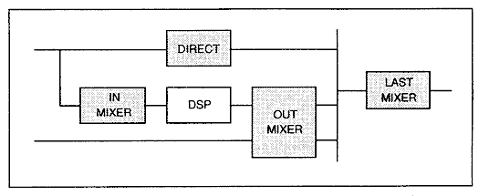
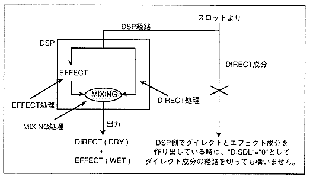
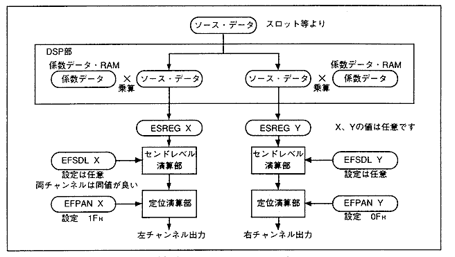
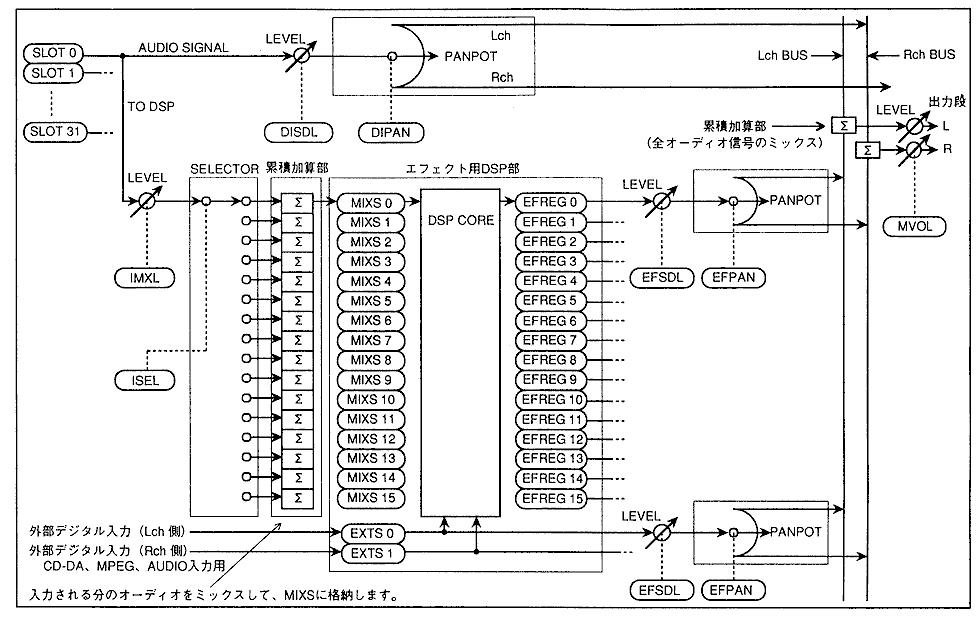
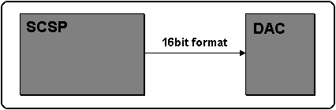

★HARDWARE Manual
★SCSPユーザーズマニュアル
★HARDWARE Manual
★SCSPユーザーズマニュアル
▲戻る
｜ 進む▼
SCSPユーザーズマニュアル/4.2 音源部レジスタ
■MIXERレジスタ
- デジタルミキサは、SCSPにおいて各音声信号のレベル・バランス調整を行うブロックです。デジタルミキサは、ダイレクト音声調整部・DSP入力段調整部・DSP出力段調整部・最終段出力調整部の4つの部分から構成されています。
図4.47にデジタルミキサブロック図を示し、各ブロックの説明を行います。
図4.47 デジタルミキサブロック図

- ダイレクト音声調整部
- 各スロットの出力が、直接DAC出力につながる経路を管理するミキサブロックです。各スロットごとに出力レベル("DISDL")と出力バランス（"DIPAN"）をコントロールすることができます。
- DSP入力段調整部
- 各スロットの出力をDSP("MIXS")へ入力するためのミキシングを行います。実際には、各スロットの"ISEL"でもって、音声信号を入力する"MIXS"を選択して、"IMXL"で入力レベルを調整します。
"ISEL"で複数の音声をミキシングする場合、各音のバランスをとることが必要です。
"MIXS"は、複数のスロット出力をミキシングして入力することができるので、BGMのリバーブのように複数の音声に対して同じエフェクト処理を行うことができます。また、DSPでエフェクトをかける場合は、音声データを"MIXS"に転送してください。
- DSP出力段調整部
- DSPでエフェクトをかけられた音声や、外部デジタル入力により取り込まれた音声を、最終的にミキシング処理を通してステレオにまとめます。DSPに相当する"EFREG"および、
外部デジタルオーディオ入力を受ける"EXTS"から出力される音声信号に対して、出力レベル("EFSDL")および、出力バランス（"EFPAN"）の調整を行うことができます。ここでまとめられたデータは、ダイレクト音声成分ともミキシングされます。
- 最終段出力調整部
- 音声のダイレクト成分とエフェクト成分をまとめて、DACへの出力レベルを調整します。最終出力レベルは"MVOL"で調整します。
- ※ダイレクト成分とエフェクト成分について
- 音声にエフェクトをかけた場合、エフェクトをかけない音(ドライ)とエフェクトをかけた音（ウェット）を、各場面に応じた適切なバランスでミキシングを行います。
搭載しているエフェクトプログラムは、DSP内部でドライとウェットに分け、最終的にミキシングしているので、DSP内でドライ成分とウェット成分を作り出している場合は、ダイレクト成分を出力する必要はありません。
これはDISDLを"0"に設定することで、未出力となります。図4.48にダイレクト成分とエフェクト成分の経路を示します。
図4.48 ダイレクト成分とエフェクト成分の経路

- DSPのプログラムの書き換えの時は、DSPの動作が不安定となり"EFREG"からは音声が正しく出力されないので、"EFSDL"を"0H"に設定して音声が出力されないようにしてください。
- ※定位について
- SCSPのデジタルミキサは、31段階のパンニング機能をサポートしていますが、更に細かく設定を行う場合は、図4.49のように、SCSP内蔵のDSPを使用してパンニング処理を行ってください。
図4.49 DSPによる定位演算

- 図5.56にデジタルミキサのブロックダイアグラムを示します。
図4.50 デジタルミキサブロックダイアグラム

- 次に、図4.50の詳細図に基づいて、各パラメータの設定方法について説明します。
"IMXL" "ISEL" "DISDL" "EPSDL"の設定は、かなりの音数を発音させた場合のオーバフローを防ぐことと、あまり音数出力しなかった場合に、全体の音量が小さくならないようにするため、以下に述べる設定方法が必要となります。
- (a) DSP入力側のミキサ
- DSP入力側のミキサに相当するものは、"IMXL"と"ISEL"のパラメータです。
"MIXS"(ミックススタックの説明は後述)は複数のスロット出力を入力させることができます。このレジスタには、複数のデータを混合させる機能があります。この時、入力するスロット数により"IMXL"を適当な値に設定して、
"MIXS"がオーバフローを起こさないように注意してください。
"IMXL"の値を変えたときの入力可能音数は、表4.18のようになります。例えば入力されるソースに対して"IMXL"を"7H"に設定し、"MIXS"に入力されるレベルを"0[dB]"とした場合に、
"MIXS"に入力可能なスロット数は１音分になります。
- 表4.18 IMXLとMIXSに入力できるソース数の関係
| "IMXL"値[2:0] | レベル | 入力可能な音数(ソース数) |
| [dB] | 倍率 |
| 0H | -MAX | ×0.000000 | --音 |
| 1H | -36 | ×0.015625 | 64音 |
| 2H | -30 | ×0.031250 | 32音 |
| 3H | -24 | ×0.062500 | 16音 |
| 4H | -18 | ×0.125000 | 8音 |
| 5H | -12 | ×0.250000 | 4音 |
| 6H | -6 | ×0.500000 | 2音 |
| 7H | -0 | ×1.000000 | 1音 |
- (b) "DISDL"および"EFSDL"
- "DISDL"と"EFSDL"に関しては"IMXL"と同じ考え方ですが、更にこの２つは、サウンド出力の総数を考慮して決定します。
サウンド出力の総数とは、音を出力する状態にあるダイレクト成分・エフェクト成分および外部入力成分の総和のことをいいます。
これは、図4.50においてL・R累積加算部に音を出力しているソースの数(L・Rの組を１つとして考えます)を指しています。
つまり音を出力しているスロットの総和とは等しくないことを表わしています。
- (c) "DIPAN"および"EFPAN"
- これらのレジスタは、設定値が"00H"または"10H"の時に、中央に定位します。
最上位ビットを"0B"にしたまま下位4ビットの値を大きくしていくと、定位は右側に移動していきます。
最上位ビットを"1B"にしたまま下位4ビットの値を大きくしていくと、定位は左側に移動していきます。
- IMXL[2:0](Ｒ／Ｗ) ; Input MiXing Level
- サウンドスロット出力データをDSPのミックススタック("MIXS")が入力する際の、ミックススタック入力レベルをスロット別に指定します。
- 表4.19 ミックススタックレジスタ入力レベル
| IMXL | レベル(dB) |
| 0 | -MAX(ミックスしない) |
| 1 | -36 |
| 2 | -30 |
| 3 | -24 |
| 4 | -18 |
| 5 | -12 |
| 6 | -6 |
| 7 | -0 |
- ISEL[3:0](Ｒ／Ｗ) ; Input SELect
- サウンドスロット出力データをDSPのミックススタックレジスタ("MIXS")に入力する際の、ミックススタック番号を、スロット別に指定します。
- ミックススタック("MIXS")は、全スロット分の入力の総和を求め、DSPの入力とします。ミックススタックは、オーバフローにおけるプロテクト機能がありませんので、全スロット分の総和が "0［d B］" を超えないように設定してください。
- DISDL[2:0](Ｒ／Ｗ) ; DIrect SenD Level
- ダイレクトデータをD/Aコンバータに出力する際の、送出レベルをスロット別に指定します。
- 表4.20 D/Aコンバータ出力レベル
| DISDL | レベル(dB) |
| 0 | -∞(送出しない) |
| 1 | -36 |
| 2 | -30 |
| 3 | -24 |
| 4 | -18 |
| 5 | -12 |
| 6 | -6 |
| 7 | -0 |
- DIPAN[4:0](Ｒ／Ｗ) ; DIrect PANpot
- ダイレクトデータを送出する際の、定位をスロット別に指定します。
- 表4.21 DIPANによる定位データ
| DIPAN | 左定位(dB) | 右定位(dB) | | DIPAN | 左定位(dB) | 右定位(dB) |
| 00H | -00.0 | -00.0 | | 10H | -00.0 | -00.0 |
| 01H | -03.0 | -00.0 | | 11H | -00.0 | -03.0 |
| 02H | -06.0 | -00.0 | | 12H | -00.0 | -06.0 |
| 03H | -09.0 | -00.0 | | 13H | -00.0 | -09.0 |
| 04H | -12.0 | -00.0 | | 14H | -00.0 | -12.0 |
| 05H | -15.0 | -00.0 | | 15H | -00.0 | -15.0 |
| 06H | -18.0 | -00.0 | | 16H | -00.0 | -18.0 |
| 07H | -21.0 | -00.0 | | 17H | -00.0 | -21.0 |
| 08H | -24.0 | -00.0 | | 18H | -00.0 | -24.0 |
| 09H | -27.0 | -00.0 | | 19H | -00.0 | -27.0 |
| 0AH | -30.0 | -00.0 | | 1AH | -00.0 | -30.0 |
| 0BH | -33.0 | -00.0 | | 1BH | -00.0 | -33.0 |
| 0CH | -36.0 | -00.0 | | 1CH | -00.0 | -36.0 |
| 0DH | -39.0 | -00.0 | | 1DH | -00.0 | -39.0 |
| 0EH | -42.0 | -00.0 | | 1EH | -00.0 | -42.0 |
| 0FH | -∞ | -00.0 | | 1FH | -00.0 | -∞ |
- EFSDL[2:0](Ｒ／Ｗ) ; EFfect SenD Level
- DSPを通してエフェクト処理を行なった波形データ(エフェクトデータ)と外部からの入力波形データのD/Aコンバータへの送出レベルを指定します。
- 表4.22 D/Aコンバータへの送出レベル
| EFSDL | レベル(dB) |
| 0 | -∞(送出しない) |
| 1 | -36 |
| 2 | -30 |
| 3 | -24 |
| 4 | -18 |
| 5 | -12 |
| 6 | -6 |
| 7 | -0 |
- EFPAN[4:0](Ｒ／Ｗ) ; EFfect PANpot
- DSPを通してエフェクト処理を行なった波形データ(エフェクトデータ)と外部からの入力波形データの定位を指定します。
- 表4.23 EFPANによる定位データ
| EFPAN | 左出力(dB) | 右出力(dB) | | EFPAN | 左出力(dB) | 右出力(dB) |
| 00H | -00.0 | -00.0 | | 10H | -00.0 | -00.0 |
| 01H | -03.0 | -00.0 | | 11H | -00.0 | -03.0 |
| 02H | -06.0 | -00.0 | | 12H | -00.0 | -06.0 |
| 03H | -09.0 | -00.0 | | 13H | -00.0 | -09.0 |
| 04H | -12.0 | -00.0 | | 14H | -00.0 | -12.0 |
| 05H | -15.0 | -00.0 | | 15H | -00.0 | -15.0 |
| 06H | -18.0 | -00.0 | | 16H | -00.0 | -18.0 |
| 07H | -21.0 | -00.0 | | 17H | -00.0 | -21.0 |
| 08H | -24.0 | -00.0 | | 18H | -00.0 | -24.0 |
| 09H | -27.0 | -00.0 | | 19H | -00.0 | -27.0 |
| 0AH | -30.0 | -00.0 | | 1AH | -00.0 | -30.0 |
| 0BH | -33.0 | -00.0 | | 1BH | -00.0 | -33.0 |
| 0CH | -36.0 | -00.0 | | 1CH | -00.0 | -36.0 |
| 0DH | -39.0 | -00.0 | | 1DH | -00.0 | -39.0 |
| 0EH | -42.0 | -00.0 | | 1EH | -00.0 | -42.0 |
| 0FH | -∞ | -00.0 | | 1FH | -00.0 | -∞ |
- "EFSDL"と"EFPAN"は、各"EFREG"および"EXTS"に対して個別の設定を行うことが可能です。各"EFREG"、"EXTS"に対応する"EFSDL"と"EFPAN"のレジスタのアドレスは、表4.24の通りです。
- 表4.24 各EFREG,EXTSに対応するEFSDL,EFPANのレジスタアドレス
| ソース | アドレス | データ | ソース | アドレス | データ |
| 7 | 6 | 5 | 4 | 3 | 2 | 1 | 0 | 7 | 6 | 5 | 4 | 3 | 2 | 1 | 0 |
| EFREG0 | 100017H | EFSDL0 | EFPAN0 | EFREG9 | 100137H | EFSDL9 | EFPAN9 |
| EFREG1 | 100037H | EFSDL1 | EFPAN1 | EFREG10 | 100157H | EFSDL10 | EFPAN10 |
| EFREG2 | 100057H | EFSDL2 | EFPAN2 | EFREG11 | 100177H | EFSDL11 | EFPAN11 |
| EFREG3 | 100077H | EFSDL3 | EFPAN3 | EFREG12 | 100197H | EFSDL12 | EFPAN12 |
| EFREG4 | 100097H | EFSDL4 | EFPAN4 | EFREG13 | 1001B7H | EFSDL13 | EFPAN13 |
| EFREG5 | 1000B7H | EFSDL5 | EFPAN5 | EFREG14 | 1001D7H | EFSDL14 | EFPAN14 |
| EFREG6 | 1000D7H | EFSDL6 | EFPAN6 | EFREG15 | 1001F7H | EFSDL15 | EFPAN15 |
| EFREG7 | 1000F7H | EFSDL7 | EFPAN7 | EXTS0 | 100217H | EFSDL16 | EFPAN16 |
| EFREG8 | 100117H | EFSDL8 | EFPAN8 | EXTS1 | 100237H | EFSDL17 | EFPAN17 |
- MVOL[3:0](Ｗ) ; Master VOLume
- D/Aコンバータへの出力マスターボリュームを表します。
全体的な出力レベルをコントロールするためのもので、出力オーバフローしたものに対して"MVOL"の設定値を低くして利得を下げても、クリッピングノイズは消えません(クリッピングノイズを無くすためには、
"DISDL"と"EFSDL"の設定をし直して、オーバフローを解消するようにしてください)。
- DAC18B(Ｗ) ; DAC out 18Bit
- デジタル出力を、18ビットD/Aコンバータのインタフェースとする時、このビットを"1B"にセットします。16ビットの時は、"0B"をセットします。(基本的に16ビットタイプのD/Aコンバータを接続するので、レジスタには"0B"を設定してください。)
図4.51 SCSPとDACの接続

▲戻る
｜ 進む▼
★HARDWARE Manual
★SCSPユーザーズマニュアル
Copyright SEGA ENTERPRISES, LTD., 1997